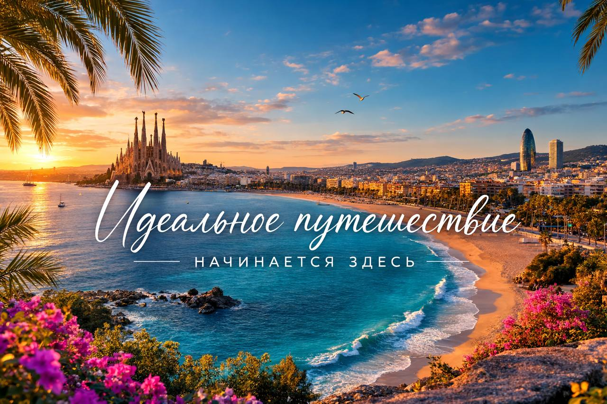

Туристический оператор Advanced Expedition С радостью приветствует вас в Испании в одной из самых красивых автономий королевства – Каталонии! Традиции разных эпох, особенности одной из древнейших культур Европы, а также удивительный менталитет этого региона не оставят вас равнодушными, а квалифицированный и внимательный персонал нашего агентства сделает моменты вашего визита к нам самыми яркими! Наша Экскурсионная программа компании удовлетворит абсолютно любые вкусы и пожелания тех, кто к нам обратится! Наша миссия Рецепт идеального отдыха с нами очень прост – профессионализм команды, умноженный на опыт, и искренняя забота о вас! Дружелюбная команданашего агентства найдет 1000 + 1 причин вернуться в Испанию снова, и мы сделаем это вместе с Advanced Expedition!
Наш главный акцент-апартаменты и отели по лучшим ценам для любого количества гостей и на любой срок!
Цены ниже рынка, всегда со скидкой — дешевле просто не найти!
Проверенное качество, уют, комфорт — отдых без компромиссов.
Подробнее
Экскурсии — отдельный блок
Экскурсии по Барселоне, Монсеррат, Жироне, Фигерас, музею Сальвадора Дали, югу Франции, замкам, винодельням, устричным фермам и многому другому.
Мы организуем всё — билеты, транспорт, гидов — по лучшим ценам.
Подробнее
Дополнительно — сервис и гарантии Мы — фактор-оператор, уже 30 лет на рынке: личный контроль каждого объекта и каждой экскурсии. 💼 Билеты и экскурсии — из любой страны Европы, быстро и удобно.